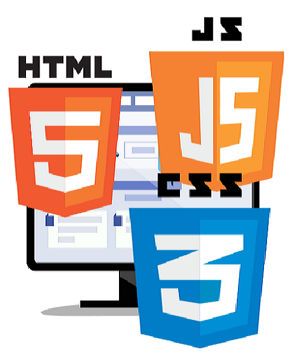
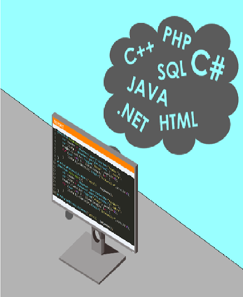

MODULO I
Diseñar la presentación, animación, organización y navegación de los contenidos y servicios web, de acuerdo a las demandas del negocio, buenas prácticas de diseño web, usabilidad y experiencia de usuario objetivo.

MODULO II
Desarrollar la construcción de programas de los sistemas de información, de acuerdo al diseño funcional, estándares internacionales de TI, buenas prácticas de programación y politicas de seguridad de organización.

MODULO III
Desarrollar las pruebas integrales de los sistemas de información y servicios de TI en la fase de implantación, de acuerdo al diseño funcional, buenas prácticas de TI y politicas de seguridad de la organización.